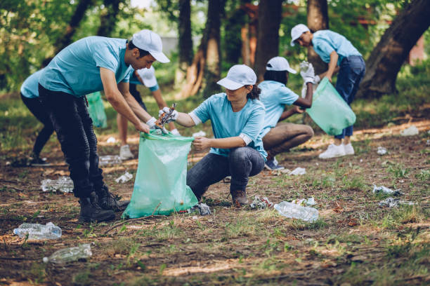

Environmental pollution refers to the introduction of harmful substances or pollutants into the natural environment, causing adverse effects on ecosystems, human health, and the quality of air, water, and soil. These pollutants can be chemical, physical, or biological agents, and their presence can disrupt the balance of ecosystems, harm wildlife, and lead to long-term degradation of the environment. Common types of environmental pollution include air pollution, water pollution, soil contamination, and noise pollution.
Environmental pollution can be categorized into several types based on the affected environment or the nature of pollutants. The main types are:
1. Air Pollution: The contamination of the atmosphere by harmful gases, chemicals, and particulate matter. Major sources include industrial emissions, vehicle exhaust, burning of fossil fuels, and natural events like wildfires or volcanic eruptions. Common pollutants include carbon monoxide, sulfur dioxide, nitrogen oxides, and particulate matter.
2. Water Pollution: The contamination of water bodies such as rivers, lakes, oceans, and groundwater due to the discharge of pollutants like chemicals, plastics, sewage, and industrial waste. This affects aquatic ecosystems, drinking water sources, and marine life.
3. Soil Pollution (Land Pollution): The degradation of land due to the disposal of solid and hazardous waste, excessive use of pesticides, deforestation, and mining activities. Pollutants can seep into the soil and contaminate groundwater, affecting plant and animal life.
4. Noise Pollution: The excessive or harmful levels of noise in the environment caused by industrial activities, traffic, construction, and urbanization. Prolonged exposure to noise pollution can lead to hearing loss, stress, and other health problems.
5. Light Pollution: Excessive or misdirected artificial light, often from urban areas, that interferes with natural ecosystems, disrupts animal behaviors, and affects human health by disturbing sleep patterns.
6. Thermal Pollution: The increase in temperature in natural water bodies due to human activities, such as industrial processes or power plants that release heated water. This can harm aquatic ecosystems by reducing oxygen levels and affecting the life cycle of aquatic organisms.
7. Radioactive Pollution: Contamination of the environment with radioactive substances, often due to nuclear power plant leaks, improper disposal of nuclear waste, or accidents. Radioactive pollution can have long-lasting and severe health effects, including cancer and genetic mutations.
8. Plastic Pollution: The accumulation of plastic products in the environment, especially in oceans, which takes centuries to decompose. Plastic pollution endangers wildlife, disrupts ecosystems, and can enter the food chain through marine life.
These types of pollution often overlap and have cumulative effects on ecosystems and human health.
Pollution is caused by various human activities and natural processes that introduce harmful substances or energy into the environment. Some of the major causes of pollution include:
1. Industrial Activities:
Factories, power plants, and manufacturing units release pollutants such as chemicals, smoke, and toxic waste into the air, water, and soil.
Industrial waste often contains hazardous substances, including heavy metals, solvents, and radioactive materials, that contaminate the environment.
2. Vehicle Emissions:
Exhaust from cars, trucks, buses, and airplanes is a major source of air pollution. Fossil fuel combustion emits harmful gases like carbon monoxide (CO), nitrogen oxides (NOx), and particulate matter (PM), contributing to smog and poor air quality.
3. Agricultural Activities:
The excessive use of chemical fertilizers, pesticides, and herbicides contaminates soil and water sources.
Livestock farming also produces methane, a potent greenhouse gas that contributes to air pollution and climate change.
4. Waste Disposal:
Improper disposal of household, industrial, and medical waste leads to land and water pollution. Dumping plastics, chemicals, and hazardous materials in landfills or oceans degrades ecosystems.
Sewage discharge, especially untreated, pollutes rivers, lakes, and oceans.
5. Deforestation:
The cutting down of forests leads to soil erosion, which can result in the contamination of water bodies with sediments.
Forest destruction also reduces the Earth’s ability to absorb carbon dioxide (CO2), contributing to global warming and air pollution.
6. Mining and Quarrying:
Extraction of minerals and fossil fuels generates dust, heavy metals, and other pollutants that contaminate soil and water.
Mining operations also often lead to deforestation and habitat destruction.
7. Construction Activities:
Construction work generates dust, noise, and waste materials like cement, bricks, and debris, which contribute to land and air pollution.
Large-scale urbanization also disrupts natural ecosystems and increases pollution levels.
8. Household Activities:
The use of household chemicals, cleaning agents, and paints releases volatile organic compounds (VOCs) that pollute indoor and outdoor air.
Burning of wood or coal for heating and cooking also contributes to air pollution, especially in developing countries.
9. Plastic Usage:
Widespread use of plastic products, which take centuries to degrade, leads to plastic pollution in oceans, rivers, and landfills.
Microplastics from cosmetics, detergents, and synthetic clothing also contribute to water pollution and harm marine life.
10. Energy Production:
Burning of fossil fuels like coal, oil, and natural gas for energy releases pollutants into the air, including sulfur dioxide (SO2), nitrogen oxides (NOx), and carbon dioxide (CO2).
Nuclear power plants produce radioactive waste, which, if not properly managed, can cause radioactive pollution.
11. Natural Causes:
Volcanic Eruptions: Release ash, gases, and particulates into the atmosphere, contributing to air pollution.
Wildfires: Produce large amounts of smoke, particulates, and gases that degrade air quality.
Dust Storms: Spread particulates that can cause respiratory issues and reduce visibility.
12. Overpopulation:
Higher population density leads to more waste production, increased resource consumption, and more pollution from transportation and industries.
These causes of pollution often interact with each other, amplifying environmental degradation and health problems on a global scale.
Pollution has far-reaching effects on the environment, human health, and ecosystems. The impacts vary depending on the type of pollution, but generally, they can be grouped into several categories:
1. Effects on Human Health:
Respiratory and Cardiovascular Diseases: Air pollution, particularly from particulate matter (PM), sulfur dioxide (SO2), nitrogen oxides (NOx), and ozone (O3), can cause respiratory problems such as asthma, bronchitis, and lung cancer. Long-term exposure can lead to heart disease, stroke, and premature death.
Waterborne Diseases: Water pollution from sewage, industrial waste, and agricultural runoff can lead to diseases such as cholera, dysentery, and typhoid. Contaminated water can also contain toxic chemicals like lead and mercury, which are harmful to human health.
Cancer and Birth Defects: Exposure to toxic chemicals, such as heavy metals, pesticides, and industrial pollutants, can increase the risk of cancer and congenital disabilities. Radioactive pollution can cause radiation poisoning, leading to cancers and genetic mutations.
Neurological Disorders: Pollutants such as lead, mercury, and other heavy metals can affect brain development in children, leading to cognitive impairments and developmental delays.
2. Environmental Effects:
Global Warming and Climate Change: Air pollution, particularly from greenhouse gases like carbon dioxide (CO2), methane (CH4), and nitrous oxide (N2O), traps heat in the atmosphere, contributing to global warming. This leads to melting ice caps, rising sea levels, extreme weather events, and disruptions to ecosystems.
Acid Rain: Sulfur dioxide (SO2) and nitrogen oxides (NOx) from industrial emissions combine with water vapor to form sulfuric and nitric acids. This causes acid rain, which can damage forests, soils, lakes, and buildings.
Ozone Layer Depletion: Chlorofluorocarbons (CFCs) and other ozone-depleting substances break down the ozone layer, which protects the Earth from harmful ultraviolet (UV) radiation. Increased UV exposure can lead to skin cancer, cataracts, and harm to marine ecosystems.
Loss of Biodiversity: Pollution destroys habitats and disrupts ecosystems, leading to the extinction of species. For example, oil spills and plastic pollution endanger marine life, while air and water pollution harm wildlife populations.
3. Effects on Ecosystems:
Water Pollution and Aquatic Life: Chemicals, plastics, and waste dumped into water bodies can kill aquatic organisms, disrupt food chains, and damage marine ecosystems. Eutrophication (excessive nutrients from agricultural runoff) leads to algal blooms, which deplete oxygen levels and cause dead zones in oceans and lakes.
Soil Degradation: Contaminants from pesticides, heavy metals, and industrial waste degrade soil quality, making it unfit for agriculture. This leads to loss of arable land, reduced crop yields, and desertification.
Habitat Destruction: Pollution from deforestation, mining, and urbanization destroys natural habitats, leading to the displacement or death of wildlife. Deforestation also accelerates soil erosion and disrupts water cycles.
4. Economic Effects:
Health Care Costs: Pollution-related illnesses increase health care expenditures for individuals and governments. Treating chronic diseases caused by pollution, such as asthma, cardiovascular conditions, and cancer, is costly.
Reduced Agricultural Productivity: Soil pollution and acid rain can damage crops, leading to lower agricultural yields and higher food prices. Polluted water sources also affect irrigation, harming food production.
Damage to Infrastructure: Acid rain corrodes buildings, bridges, and other infrastructure, leading to higher maintenance and repair costs.
5. Social and Psychological Effects:
Mental Health Issues: Prolonged exposure to polluted environments and the stress of living in highly polluted areas can contribute to mental health problems, including anxiety, depression, and stress.
Displacement: Climate change and environmental degradation caused by pollution can lead to the displacement of communities, particularly in coastal regions affected by rising sea levels or regions with water scarcity due to drought.
6. Aesthetic and Recreational Impact:
Degraded Landscapes: Litter, plastic waste, and other forms of land pollution make environments less appealing and reduce their recreational value. Polluted rivers, beaches, and forests discourage tourism and outdoor activities.
Cultural Heritage Damage: Air pollution, particularly from sulfur dioxide, accelerates the deterioration of historical monuments and buildings made of limestone and marble, such as the Taj Mahal and the Acropolis.
The combined effects of pollution create a vicious cycle that threatens the health of the planet, its ecosystems, and the well-being of future generations. Addressing these impacts requires a concerted effort to reduce emissions, manage waste, and implement sustainable practices across various sectors.
Addressing environmental pollution requires a comprehensive approach that involves governments, businesses, communities, and individuals. Solutions and mitigation strategies can be implemented at various levels to reduce the sources of pollution and mitigate its harmful effects. Here are some key strategies:
1. Regulations and Policy Measures:
Stricter Environmental Laws: Governments can enforce stricter pollution control regulations that limit emissions of harmful substances from industries, vehicles, and agriculture. This includes setting emission limits for greenhouse gases, particulate matter, and hazardous chemicals.
Pollution Taxes and Emission Trading: Introducing pollution taxes or "carbon taxes" can incentivize businesses to reduce their environmental impact. Cap-and-trade systems can also allow companies to buy and sell emission credits, encouraging reductions in emissions.
Ban on Hazardous Substances: Governments can ban or restrict the use of harmful chemicals, such as chlorofluorocarbons (CFCs), single-use plastics, and lead-based products, to minimize pollution.
2. Clean and Renewable Energy:
Transition to Renewable Energy Sources: Shifting from fossil fuels (coal, oil, natural gas) to cleaner, renewable energy sources like solar, wind, hydropower, and geothermal reduces air pollution and greenhouse gas emissions.
Energy Efficiency: Encouraging energy efficiency in industries, transportation, and households through modern technologies, such as LED lighting, energy-efficient appliances, and electric vehicles, can reduce energy consumption and pollution.
Support for Electric and Hybrid Vehicles: Governments can provide incentives for electric vehicle adoption by creating charging infrastructure, offering tax breaks, and encouraging public transportation systems.
3. Sustainable Agriculture and Farming:
Organic Farming: Promoting organic farming practices reduces the use of synthetic fertilizers and pesticides that contaminate soil and water. Crop rotation, composting, and natural pest control methods can also enhance soil health.
Sustainable Water Management: Reducing agricultural runoff through buffer zones, wetlands, and better irrigation practices helps prevent nutrient pollution and eutrophication in water bodies.
Reduction of Methane Emissions: Encouraging practices such as improved livestock management, reduced food waste, and the use of biogas can lower methane emissions from agriculture.
4. Waste Management and Recycling:
Waste Segregation and Recycling: Proper waste segregation at the source, followed by recycling and reuse of materials, can reduce the amount of waste sent to landfills and incinerators, lowering land and air pollution.
Circular Economy: Adopting a circular economy model, where products are designed to be reused, repaired, or recycled, helps minimize waste generation and the depletion of natural resources.
Composting: Organic waste, such as food scraps and yard waste, can be composted to create nutrient-rich soil, reducing landfill waste and methane emissions.
5. Water Pollution Control:
Wastewater Treatment Plants: Investing in modern wastewater treatment facilities ensures that harmful chemicals and biological contaminants are removed from sewage and industrial effluent before being discharged into water bodies.
Strict Regulation of Industrial Waste: Industries should be required to treat their waste before disposal to prevent the contamination of water sources. Heavy fines can be imposed on industries that violate pollution regulations.
Reducing Plastic Use: Banning or reducing the use of single-use plastics and promoting alternatives like biodegradable materials can help tackle plastic pollution in oceans and rivers.
6. Air Pollution Control:
Emission Filters and Scrubbers: Industries can install advanced filters, scrubbers, and catalytic converters to reduce harmful emissions of gases and particulates from factories, power plants, and vehicles.
Green Infrastructure: Planting more trees and creating green belts in urban areas can help absorb pollutants like carbon dioxide (CO2) and nitrogen oxides (NOx) while improving air quality.
Monitoring and Public Awareness: Governments can set up air quality monitoring systems to provide real-time data on pollution levels. Public awareness campaigns can encourage citizens to reduce car use, save energy, and support pollution reduction initiatives.
7. Soil Conservation and Remediation:
Reforestation and Afforestation: Planting trees and restoring forests can help prevent soil erosion, improve water retention, and enhance biodiversity, which mitigates the impacts of soil pollution.
Bioremediation: Using microorganisms, plants, and fungi to break down pollutants in contaminated soil is an effective way to clean up toxic sites and restore soil health.
Sustainable Land Use Practices: Implementing land use practices that minimize deforestation, overgrazing, and industrial development can help preserve soil quality and prevent land degradation.

8. Noise and Light Pollution Mitigation:
Urban Planning: Zoning laws can ensure that industrial areas are separated from residential zones, helping to reduce noise pollution in cities.
Sound Barriers: Installing sound barriers along highways and around construction sites can reduce noise pollution in urban areas.
Energy-Efficient Lighting: Using energy-efficient lighting with proper shielding can minimize light pollution and reduce its impact on ecosystems and human health.
9. Public Education and Community Action:
Environmental Education: Educating the public about the causes and effects of pollution, as well as ways to reduce their environmental footprint, can lead to positive behavior changes, such as recycling, reducing plastic use, and saving energy.
Community Clean-Up Initiatives: Organizing community clean-up campaigns to remove litter, reduce plastic pollution, and raise awareness about waste management can help maintain clean and healthy environments.
10. International Cooperation:
Global Climate Agreements: International agreements, such as the Paris Agreement, focus on reducing greenhouse gas emissions globally to combat climate change. Cooperation between countries is essential to address cross-border pollution issues, such as ocean pollution and transboundary air pollution.
Technology Transfer: Developed nations can assist developing countries by transferring green technologies and providing financial and technical support to help them adopt sustainable practices and reduce pollution.
11. Research and Innovation:
Development of Green Technologies: Investing in research and development of cleaner technologies, such as carbon capture and storage (CCS), green energy solutions, and pollution control devices, can significantly reduce pollution levels.
Alternative Materials: Research into sustainable and biodegradable materials can reduce the need for plastics and other pollutants that are difficult to recycle or dispose of.
12. Individual Actions:
Reducing Carbon Footprint: Individuals can make choices that reduce their carbon footprint, such as using public transportation, reducing energy consumption, recycling, and supporting eco-friendly products.
Water Conservation: Reducing water use, fixing leaks, and using water-efficient appliances can help prevent water pollution and reduce strain on freshwater resources.
By implementing these solutions and mitigation strategies, we can reduce environmental pollution, protect ecosystems, and improve the health and quality of life for people and the planet. Collaboration among governments, businesses, and individuals is essential to achieve lasting results.